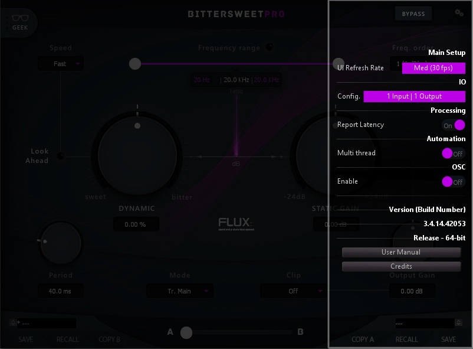

4 Plugin Settings
Clicking the cogwheel symbol opens a window with a range of general settings and a direct access button to the user manual.

| Main Setup | Automation |
| I/O | OSC |
| Processing | Version / User Manual / Credits |
4.1 Main Setup
UI Refresh Rate
Max refresh rate of the plug-in’s UI.
4.2 I/O
Input / Output
I/O Config and Layout is not always available, though it is always displayed, it can only be edited in some configurations and formats.
Config
Current I/O configuration, is only available in certain VST hosts; typically hosts with limited capabilities for handling multichannel configurations.
Layout
Available I/O routings based on current I/O configuration. Layout is available for editing if more than two input channels are available. If the Layout is changed from the default value, an asterisk * is displayed next to the Layout information in the Input section.
4.3 Processing
Report Latency
Enables/Disables the latency reporting to the host.
4.4 Automation
Multithread
Enables/Disables Multithread Automation.
4.5 OSC
OSC is available in BitterSweet Pro only, and is not supported in BitterSweet Pro Studio Session.
Enable
Enables/Disables OSC control and mapping of the plug-in’s parameters.
4.6 Version Information
Plug-in version and build-number information.
4.7 User Manual / Credits
Quick link to the User Manual. Plug-in creation credits.